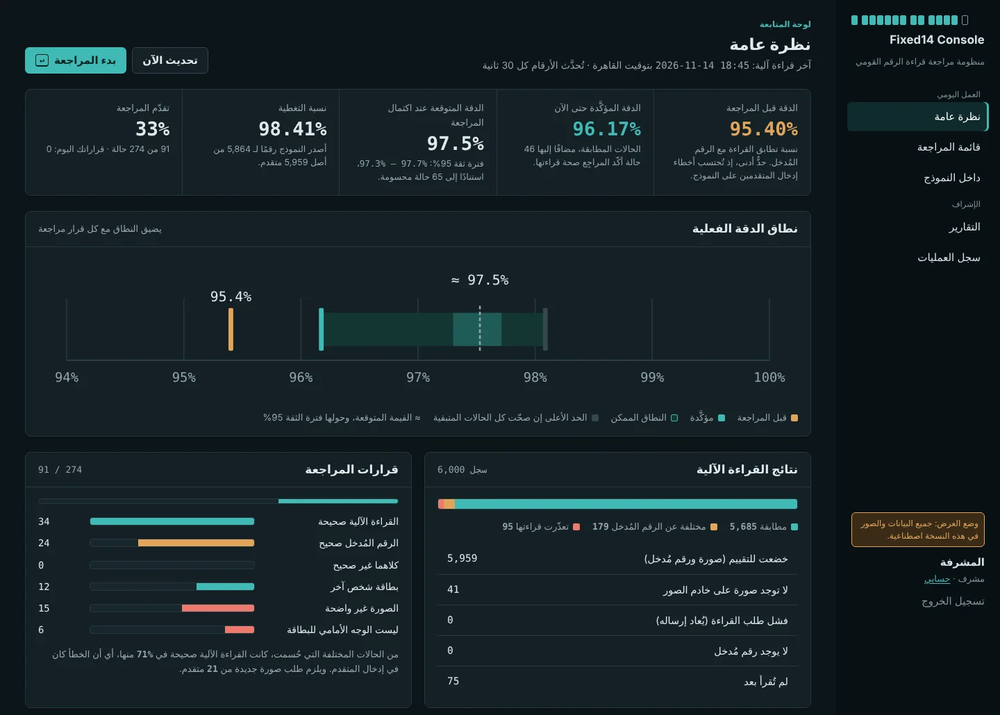

01Used in production
Egyptian national-ID OCR and verification
Reads the 14-digit national ID number from applicants' phone photos and checks it against the number they typed. Staff review only the cases that disagree.
95.5%matched in production, 44,305 applications
+12 / 0cards gained / regressions vs. old model
0.7 smedian per image, CPU only
How it was built and measured
- Designed a 113K-parameter digit reader: a CNN encoder with 14 ordered attention slots instead of CTC.
- Read 342 of 357 admitted cards exactly on a held-out audit that was locked before testing, with pass criteria written down before the run.
- Against the previous production model on the same cards: +12 cards, 0 regressions (exact sign test, p = 0.0005).
- Traced production failures: recovered 437 of 659 failed downloads from an alternate folder; most of the other 222 were missing or empty applicant folders.
- Dockerized FastAPI service with golden self-tests, hash-pinned models, one-tag rollback, and a review console with Wilson-interval accuracy bounds.
PythonTensorFlow/KerasPaddleOCROpenCVFastAPIDocker